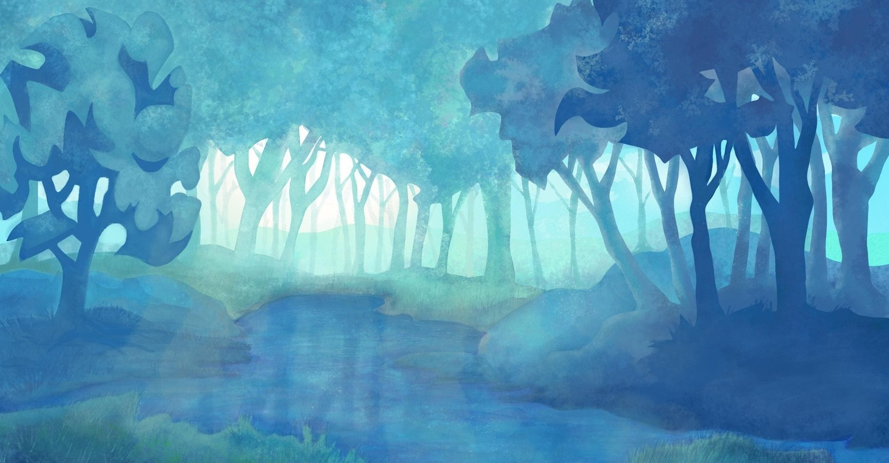

Now that I have internet access, I’ll be able to install packages simply with the package manager.
First, let’s upgrade the existing packages:
sudo dnf upgrade
Let’s install @base-x to get video drivers
sudo dnf install @base-x
Then install a basic text editor for changing config files:
sudo dnf install nano
Now it’s time to install a desktop environment. The default desktop environment that ships with Fedora is Gnome. For this spin I’ll install KDE Plasma, which has better configurability. To install KDE Plasma, I’ll use this command:
sudo dnf install bluedevil breeze-icon-theme colord-kde dolphin gwenview irqbalance kamera kcalc kcharselect kde-gtk-config kde-partitionmanager kde-print-manager kde-settings-pulseaudio kdegraphics-thumbnailers kdeplasma-addons kdialog kdnssd keditbookmarks kf5-akonadi-server-mysql kf5-baloo-file kf5-kipi-plugins kfind khotkeys kmenuedit konsole5 kscreen ksshaskpass kwalletmanager5 kwin okular pam-kwallet phonon-qt5-backend-gstreamer pinentry-qt plasma-breeze plasma-desktop plasma-desktop-doc plasma-drkonqi plasma-nm-l2tp plasma-nm-openconnect plasma-nm-openswan plasma-nm-openvpn plasma-nm-pptp plasma-nm-vpnc plasma-pa plasma-systemmonitor plasma-workspace plasma-workspace-geolocation polkit-kde sddm sddm-breeze sddm-kcm setroubleshoot spectacle
The above command is a subset of the packages you receive if you were to run
sudo dnf install @kde-desktop-environment
or
sudo dnf group install KDE Plasma Workspaces
Enable sddm and graphical mode:
sudo systemctl enable sddm
sudo systemctl set-default graphical.target
After the reboot, you should now see KDE Plasma login screen!
Install some additional groups
sudo dnf install @"Hardware Support"
sudo dnf install @Fonts
sudo dnf install @"Common NetworkManager Submodules"
At last, install chromium-freeworld as a browser, which supports more codecs than normal chromium. (E.g. some video formats will not play in chromium.) Optionally, install firefox. In my experience, firefox is usually some Mbps slower than chromium-freeworld.
sudo dnf install chromium-freeworld
sudo dnf install firefox
References
https://github.com/Zer0CoolX/Fedora-KDE-Minimal-Install-Guide